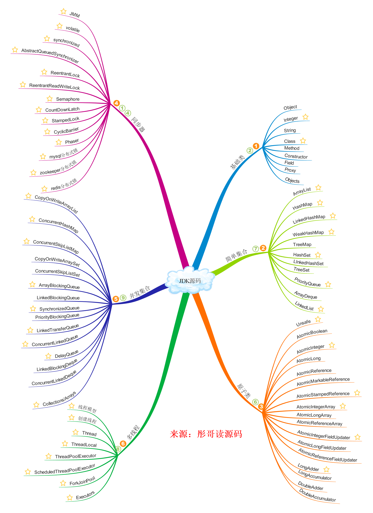

大家好，我是彤哥，今天我想和大家再聊聊JDK源码的几个问题：
为什么要看JDK源码
JDK源码的阅读顺序
JDK源码的阅读方法
一，JDK源码是其它所有源码的基础，看懂了JDK源码再看其它的源码会达到事半功倍的效果。
二，JDK源码中包含大量的数据结构知识，是学习数据结构很好的资料，比如，链表、队列、散列表、红黑树、跳表、桶、堆、双端队列等。
三、JDK源码中包含大量的设计模式，是学习设计模式很好的资料，比如，适配器模式、模板方法模式、装饰器模式、迭代器模式、代理模式、工厂模式、命令模式、状态模式等。
三，JDK源码中包含大量Java的高阶知识，比如弱引用、Unsafe、CAS、锁原理、伪共享等，不看源码是很难学会这些知识的。
四，面试时更好地收割offer，这可能是很多同学最初的想法，其实真正看多了源码，这一点可能并不是太重要了，因为你会发现更广阔的世界。
五，彤哥认为最重要的，阅读源码是对思维的一种锻炼，是学习优秀设计的最佳途径，本文来源于工从号彤哥读源码。
首先，JDK源码我分成了以下几个部分：
基础类，是指组成JDK源码地基的一部分类。
比如包装类、反射类、工具类等，这些类有个共同点，就是代码逻辑相对简单，不存在数据结构、复杂运算等问题。
对于基础类，彤哥的建议是自己从头到尾浏览一遍，对于看不懂的地方可以写测试用例或者上网查查资料。比如，Integer里面有个IntegerCache内部类你可能不知道干嘛的，这时候光看代码是没用的，只能上网查查资料了，也不能盲目地死磕。
简单集合，是指不存在多线程安全问题的集合。
这部分集合一般用在单线程中，或者方法体中，但是他们用到了很多的数据结构，所以需要一定的数据结构知识。
对于简单集合，彤哥的建议是先弄明白底层的数据结构知识，再去看源码，这样可能会轻松一些。当然，彤哥后面也会出数据结构系列的。
原子类，是指在多线程环境下能够保证原子性的类。
这部分类主要包括Atomic*开头和*Adder结尾的类，位于juc下面的atomic包中。
对于原子类，彤哥的建议是先去了解底层的Unsafe、CAS、伪共享等概念，再去看最简单的AtomicInteger，最后再看LongAdder这种复杂的类。其中，断点调试是不可或缺的手段。
说句实话，LongAdder这个类能学到很多高阶的知识，非常推荐把这个类研究透彻，后面再去看Disruptor、Netty等源码会事半功倍。
同步器，是指为了控制多个线程的竞争关系而存在的类或者关键字等，本文来源于工从号彤哥读源码，它们可以说是Java中最重要的内容，没有它们就无法控制多线程的正常运转。
这部分内容主要包括synchronized关键字、volatile关键字、重入锁、读写锁、倒计时器、信号量、回环栅栏、阶段器、分布式锁的实现等等。
对于同步器，彤哥的建议是先了解内存模型、可见性、原子性、有序性、Happens-Before等基本概念，再尝试阅读这部分的源码，最后再归纳出属于你自己理解的“同步器的原理”。
并发集合，是指多线程环境下能够保证数据一致性的集合。
这部分集合主要是运用在多线程环境下，只有极个别类牵涉到高级的数据结构，更多的是锁、CAS、volatile、自旋等高阶技巧的运用。
对于并发集合，彤哥的建议有三点：
一定要在同步器之后阅读
数据结构先搞透，比如ConcurrentSkipList
利用IDEA的Thread级别的断点，不断调试，不断调试，不断调试
线程（池）类，是指跟线程和线程池相关的类。
这部分类主要包含Thread、ThreadLocal、三种线程池等。
对于线程（池）类，彤哥的建议是先从整体上把握，再分成几个块来看，看哪块的东西就只看那块的东西，不要管其它的代码，即要搞清楚你的重点在哪里，比如，看线程运行的流程就不要管状态的事，凡是牵涉到状态的代码全部跳过，反之亦然，都看完了，再串一起看。
IO类，是指跟输入输出流相关的类，这部分类主要包括文件操作相关的类以及网络IO相关的类。
对于IO类，彤哥的建议是简单浏览，做到心里有数即可，用到的时候再去查都可以。
但是对于nio相关的类，还是要好好研究的，这部分类我们放在Netty源码阅读的相关章节中一起学习。
其它类，工作中遇到了可以点进去看看，但是不建议抽出时间单独去研究，比如，时间类、awt类，看的必要性不是很大。
一，设定目标，目标越明确越好，不要设定得过于虚无缥缈。比如，熟悉HashMap的数据结构，这就是一个很明确的目标；再比如，看懂HashMap的源码，这就很缥缈了。
二，尝试自己提出问题，先自己根据某个知识点发散提出问题。比如，关于HashMap你能想到哪些知识点，这部分可以借助思维导图无限想象，后面有机会彤哥给大家分享一下思维导图联想法。
三，尝试网络查询问题，打开度娘，输入你要学习的知识点，把前面几页统统点开，看看别人都遇到了哪些问题，当然，能力强的同学也可以使用Google，这部分查询出来的问题也可以补充到你的思维导图中去。
四，尝试阅读源码，对于上面的问题，一个一个尝试去源码中寻找答案，由点及面，最后再总结整个大的知识点。
五，不断发现问题，在阅读源码的过程中可能又会发现新的问题，先跳过去，而是把它加到思维导图中，等当前的问题解决完了再去解决。
六，专注你的问题，在阅读源码的时候一定要专注于你当前的问题，不要受其它问题的干扰，比如看线程池任务执行的流程，你就不要管线程池状态的事情。
七，多做比较，横向比较和纵向比较，从多维度去比较，本文来源于工从号彤哥读源码。
八，多做实验，多多利用IDE的调试模式，不断修改断点，不断调试。
九，多与人交流，如果条件允许的话，多与周边的人一起交流，当然，也可以来骚扰彤哥。
十，多做总结，对于自己解决的问题，一定要学会总结，多做学习笔记，当然，也欢迎来彤哥这里投稿。
十一，耐心&坚持，阅读源码是一件非常枯燥而且枯燥的事情，一定要坚持坚持坚持。
今天，我们聊了聊学习JDK源码的几个问题，不小心就写了这么多，都是肺腑之言，希望大家能收下我的膝盖。
最后，送上一幅JDK源码的思维导图，标星是彤哥建议必看的部分，对于时间充足的同学，没标星当然最好也看看。
关于JDK源码的部分彤哥已经全部解析完毕，点击**公众号彤哥读源码左下角“JDK源码”**可以查看所有源码解析。
